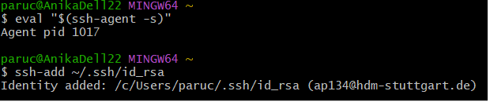
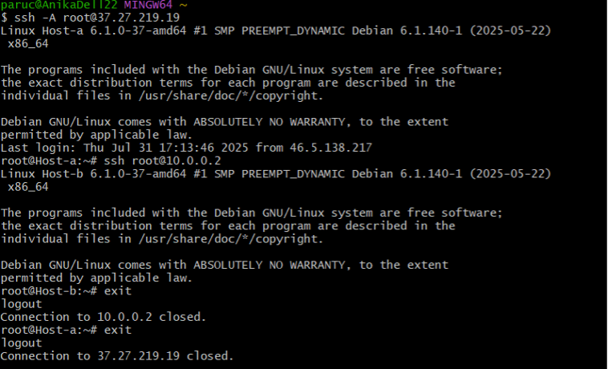
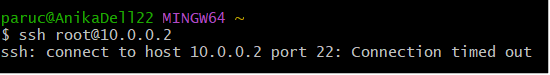
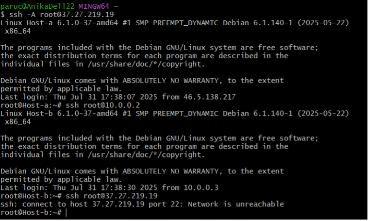

Excersise 6: SSH Host Hopping
Preparation:
First, create two Hetzner servers: Host A and Host B.
-
Host A:
-
Has a public IP address
- Uses the same SSH key as Host B
-
Shares a private network with Host B
-
Host B:
- Has only a private network IP
- Uses the same SSH key as Host A
Start the SSH agent and load the private key. 
Step 1: Connect to Host A with Agent Forwarding and Jump to Host B
Connect to Host A using:
ssh -A root@<ip-host-a>The local key is forwarded via the agent, otherwise it wouldn’t be recognized. Once on Host A, connect to Host B using:
ssh root@<network-ip-host-b>Step 2: Close Both Connections
Exit both sessions with:
exit
Step 3: Try Connecting to Host B Directly from Local
If you try to connect directly from your local machine to Host B, it should fail and return an error. Host B is not supposed to be directly accessible. 
Step 4: Attempt to Connect Back to Host A from Host B
If you connect from Host A to Host B and then try to connect back from Host B to Host A, this should also fail. Agent forwarding only works one way, so Host B does not have access to your local key. 